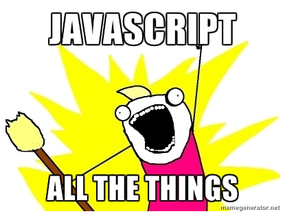

Setup
Default -
Sky -
Beige -
Simple -
Serif -
Night
Moon -
Solarized
PLEASE DOWNLOAD
(but don't install):
- DesktopServer Limited Free:
http://serverpress.com/downloads/ - Sublimetext Version 2:
http://www.sublimetext.com/2
WEB DEVELOPMENT
Introductory Class
Created by Noam Eppel / noam@cleanforest.co
Freaking rules man?!
Pay attention to teacher.
Take notes.
WHY ARE YOU HERE?!
...you could be outside enjoying this $weather_adjective day...
WHY AM I HERE!?
“There's never been a BETTER, more EXCITING time to develop for the web. The Internet is the foundation for the economy, entertainment, education and nearly EVERYTHING else. Knowing the digital languages which power the internet is an essential skill. This is an amazing opportunity to CREATE, BUILD and INNOVATE. This is the RIGHT TIME and the RIGHT PLACE. This is like being a ROCK STAR in the late sixties. This is like being a film maker in the seventies. When you know how to CODE, BUILD and CREATE, you can do ANYTHING. CODING is the LITERACY of the 21st century.”
“Everybody in this country should learn to program a computer, because it teaches you how to think.” Steve Jobs
“Learning to code stretches your mind, and helps you think better, creates a way of thinking about things that I think is helpful in all domains.” Bill Gates
“Great coders are today's rock starts. That's it.” Will.i.am
Let's Install Desktop Server

So let's Install Sublime Text
Let's Talk About The Web...
a small bit of theory..

Say Hello To A Web Server
Say Hello To A Web Server

Linux
Apache
MySQL
PHP
...say hello to LAMP!
Hello Linux
Free, open source operating system
Hello Apache
Server delivers what you need
Hello MySQL
Database where stuff is stored
Hello PHP
Gets it done
Say Hello To A Web Page
just a few more technologies to know...
Hello HTML
Defines the structure of a web page.
Hello CSS
Adds style to a HTML web page.
Hello Javascript
Adds interactivity to a HTML web page.
Web Browser?
Web browsers only understand HTML, CSS, JS...
How much money for all these great web technologies!?
Desktop Server installs a Web Server (Apache, MySQL, PHP) on your computer's operating system.
Sublime Text is an editor used to write code. (Many free alternatives.)
POP QUIZ HOT SHOT
Pretty Code
This is a HTML paragraph tag. It has a start and end.